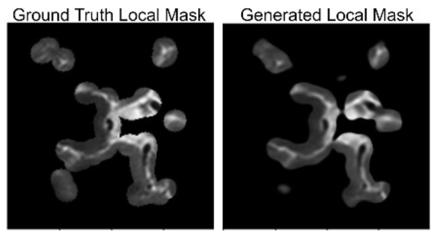
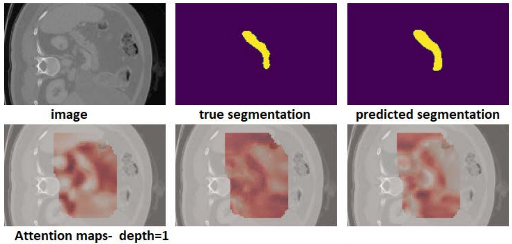
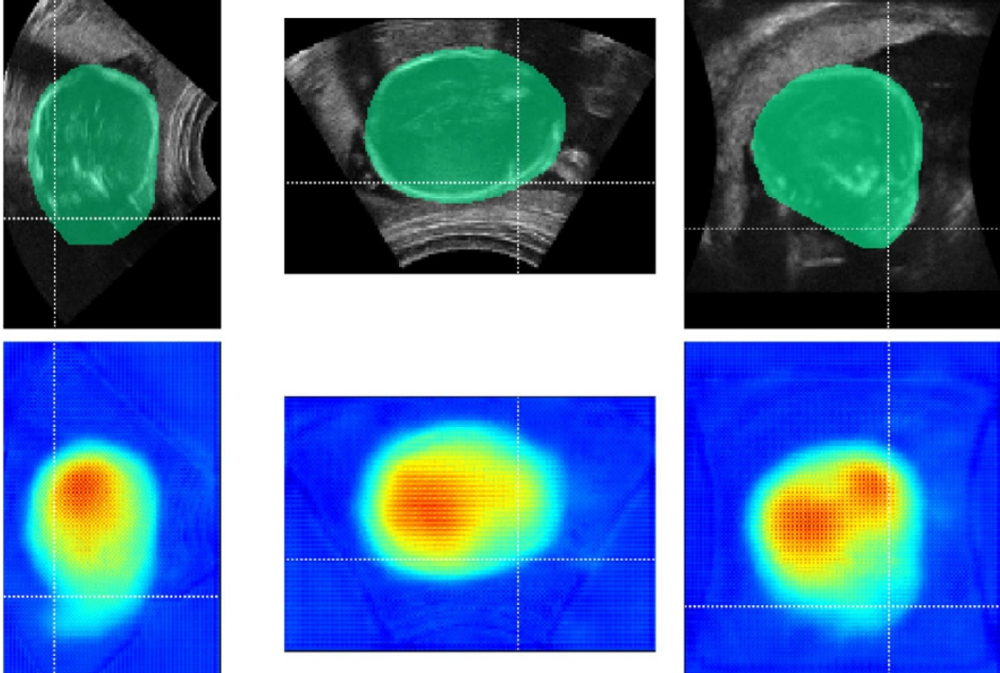
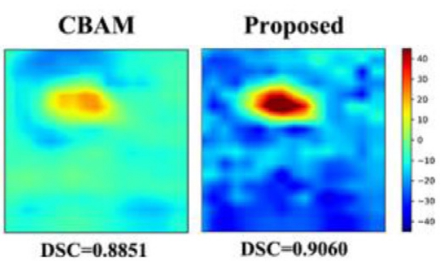

Attention Mechanism
The attention mechanism in deep learning lets neural networks focus on specific regions of interest in medical data. It works by computing attention scores for each element/pixel in a sequence or image, determining their relevance. These scores are used to guide the model to pay more attention to the important elements/pixels. Finally, a weighted sum of the input elements produces a context vector, capturing the most relevant information for the task at hand. This mechanism enhances the model's ability to handle various types of data and has become a crucial component in medical imaging domains.

Attention from multi-scale to single-scale
The schematic illustration of our prostate segmentation network equipped with attention modules. FPN: feature pyramid network; SLF: single-layer features; MLF: multi-layer features; AM: attention module; ASPP: atrous spatial pyramid pooling. The core of our presented framework is to fully exploit the useful complementary information encoded in the multi-level features to refine the features at each individual layer. Specifically, we achieve this by developing an attention module, which can automatically learn a set of weights to indicate the importance of the features in MLF for each individual layer.

Mixed kernel attention mechanism
Schematic illustration of the architecture of our attention module, which takes an input feature map and generates a refined attentive feature map of the same size. The module includes two layers of group convolutional blocks followed by feature concatenation and 1 × 1 × 1 bottleneck convolution blocks. The module uses a sigmoid activation function and a residual connection between its input and output to reduce the difficulty of learning attentive maps.

Collaborated Works
|  |
Learned Local Attention Maps for Synthesising Vessel Segmentations from T2 MRI
Yash Deo, Rodrigo Bonazzola, Haoran Dou, Yan Xia, Tianyou Wei, Nishant Ravikumar, Alejandro F Frangi, Toni Lassila MICCAI Workshop: Simulation and Synthesis in Medical Imaging, 2023 |
|  |
Medical Image Segmentation using Transformer Networks
Davood Karimi, Haoran Dou, Ali Gholipour IEEE Access, 2022 |
|  |
Hybrid Attention for Automatic Segmentation of Whole Fetal Head in Prenatal Ultrasound
Volumes
Xin Yang, Xu Wang, Yi Wang, Haoran Dou, Shengli Li, Huaxuan Wen, Yi Lin, Pheng-Ann Heng, Dong Ni Computer Methods and Programs in Biomedicine, 2020 |
|  |
Semi-supervised Segmentation of Lesion from Breast Ultrasound Images with Attentional
Generative Adversarial Network
Luyi Han, Yunzhi Huang, Haoran Dou, Shuai Wang, Sahar Ahamad, Honghao Luo, Qi Liu, Jingfan Fan, Jiang Zhang Computer Methods and Programs in Biomedicine, 2020 |